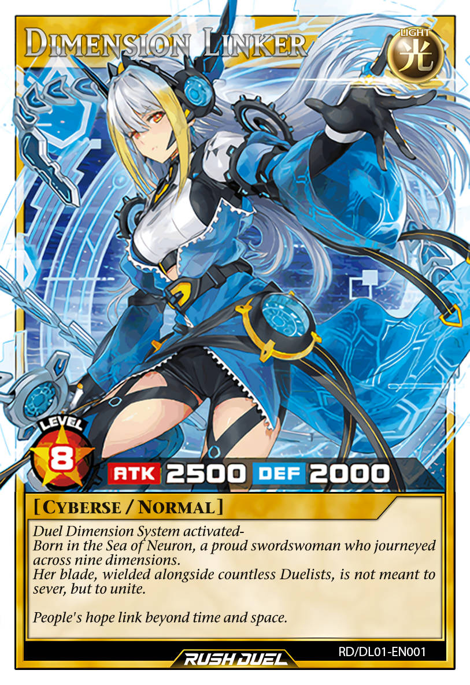

Attribute: LIGHT
Level: 8
[Cyberse/Normal]
Duel Dimension System activated-
Born in the Sea of Neuron, a proud swordswoman who journeyed
across nine dimensions.
Her blade, wielded alongside countless Duelists, is not meant to
sever, but to unite.
People's hope link beyond time and space.
ATK/ 2500 DEF/ 2000